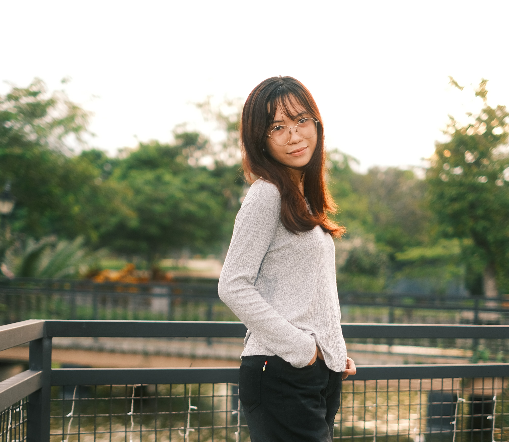
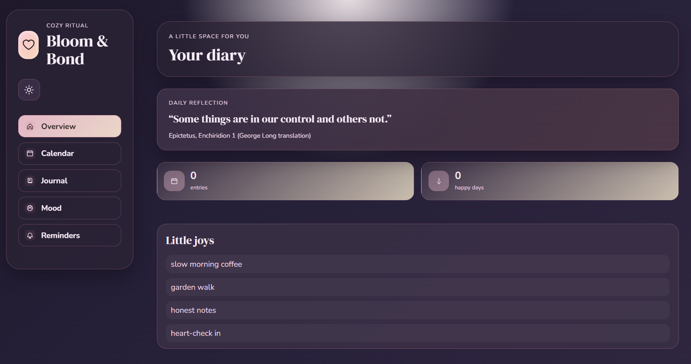

Hi! I'm Juliet Tumalac, an Information Technology student specializing in Django web applications, and web/front-end design.

4th Year IT Student & Tech Enthusiast
Combining software logic, structured data architectures, and user-centric web design.
Crafting responsive and dynamic user interfaces using Django, Django PWA, Tailwind CSS, CSS, JavaScript, and HTML. Enhanced with Canva for visual assets and Figma for prototyping.
Expert in AI prompt engineering using Gemini, ChatGPT, and Claude. Experienced in deploying web applications seamlessly to Netlify and PythonAnywhere.
Web designing, AI prompt engineering, system deployment, and technical writing I specialize in.
Building responsive interfaces & visual prototypes.
Crafting advanced prompts & leveraging LLMs.
Hosting and publishing web apps & version control.
Crafting clear technical documentation, reports & specs.
Real-world software applications, system prototypes, and photography UI templates.

Web App & PWAA cozy web application for daily journal entries, calendar event reminders, mood tracking, and daily reflections designed with a calm, aesthetic interface.
Key milestones, certifications, and academic progress in Information Technology.
4th Year Undergraduate
Specializing in Web Designing (Django, Django PWA, Tailwind CSS, JavaScript, HTML/CSS, Figma, Canva), AI Prompt Engineering (Gemini, ChatGPT, Claude), and System Deployment (Netlify, PythonAnywhere).
Capstone Project Lead Role
Served as Web Designer and Technical Writer. Designed responsive user interfaces and prototypes using Figma and Tailwind CSS, built robust Django/PWA features, and authored comprehensive technical documentation.
Reach out or check out my repositories and professional profiles below.
Feel free to check out my GitHub repository, connect on professional networks, or reach out via email.
4th Year IT student specializing in intuitive Web Designing, AI Prompt Engineering, System Deployment, and Technical Writing. Passionate about building polished user interfaces and clean system architectures.